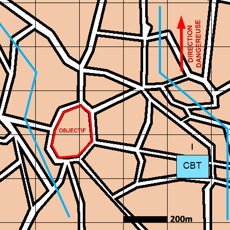

NIVEAU :Automate
ARME :Melee
MISSION :Boucler
Objectif principal
- Interdire
- Renseigner
Modalités d'exécution
-
les unités de mêlée bouclent le bloc urbain en se positionnant autour de la zone ;
-
Les appuis feu sont en appui.
Schéma de modélisation

Paramètres obligatoires
Objectif (parmi les objectifs suivants)
Zone :
Zone à rejoindre et à boucler.
Bloc urbain :
Bloc Urbain à rejoindre et à boucler.
Paramètres optionnels
Obstacles: Obstacles à construire.
Valoriser obstacles: Indique si on valorise les obstacles après construction.